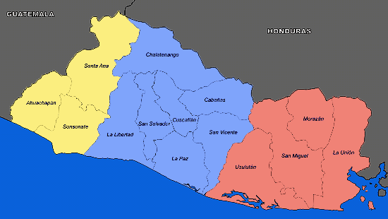

Origen de El Salvador
Para conocer la historia y origen de El Salvador primero debes conocer cómo es y cuál es su situación geográfica. Este país que se extiende de oeste a este desde Guatemala (ver historia de Guatemala) hasta Honduras y de norte a sur entre Honduras (ver historia de Honduras) y el océano Pacífico, es un territorio pequeño y muy poblado.mapa histórico de El Salvador
Una nación cargada de contradicciones sociales, con el lastre que supone no haber superado ninguna de las lacras que le dejó la administración colonial, que nunca ha perdido la esperanza de mejorar sus condiciones de vida.
A lo largo de su historia, ha conocido numerosas conjuras. En los cambios de Gobierno se han alternado revoluciones. épocas de represión y restauraciones del poder establecido, y en cada ocasión se ha prometido al pueblo orden, libertad y prosperidad.
En las últimas décadas la escalada de la violencia ha formado parte de la vida cotidiana de los salvadoreños, pues en esta tierra coexisten un bando de pobres de solemnidad duramente enfrentado a otro que pretende conservar a toda costa su fortuna.
Éste es. sin embargo, un panorama común a todos los países de Centroamérica, como lo es un eclecticismo sociocultural en el que, bajo el barniz de la cultura europeizante, emergen con fuerza los ritos y las religiones del pasado remoto.

Colonización de El Salvador == Los indómitos cuscatlecos incendiaron la colonia y ésta fue despoblada por los castellanos. Ejerciendo en Guatemala las funciones de teniente, en ausencia de su ilustre hermano, envió una segunda expedición colonizadora a Cuscatlán, a las órdenes del capitán Diego de Alvarado, quien fundó la villa de San Salvador en el valle de la Bermuda el 1º de abril de 1528, cerca y al sudoeste del núcleo indiano de Suchitoto. En 1530, Pedrarias Dávila, gobernador de Tierra Firme, envió al Capitán Martín Estele, a efecto de que fundara una vía europea en el oriente salvadoreño. pedro Este propasó el ímpetu del río Lempa y llegó a San Salvador; intimó a sus vecinos para que desconocieran la autoridad de los Alvarado y lo aceptaran como teniente, gobernador y capitán general; desairado en sus peticiones, se trasladó hacia el sur y fundo la ciudad de los castellanos, en un pueblo llamado Pululapán (hoy San Martin, ciudad de San Salvador), obligaron a este a evacuar el territorio salvadoreño. Conocidos estos hechos y ya de regreso en Guatemala, don Pedro de Alvarado envió al capitán Luis de Mosco, con poderes suficientes para que fundara una colonia en la región ultralempiral oriental. El 8 de mayo de 1530 fundó la villa de San Miguel de la Frotera. villa
Época colonial De 1524 a 1542, El Salvador formo parte de la Gobernación de Guatemala y de éste último año al de 1821, de la Real Audiencia, primero y de la Capitanía General o Reino de Guatemala, después. Su primera división adminstrativa fue en tres provincias: los izalcos o sonsotante; construyeron la alcaldía mayor de San Salvador. En 1786, se creo la intendencia de San Salvador, dividida en quince partidos o distritos, siempre dependiente de las auroridades del Reino de Guatemala. Su área fue la misma que la de la alcaldía mayor, excepto la provincia mayor de Choluteca, que se agregó en 1732.
colonizacion En lo eclesiástico, sus parroquias formación parte de la diócesis de Guatemala. En 1770, los dominicos se establecieron en Sonsonate; en 1574, los Franciscanos hicieron lo mismo en Sonsonate, San Salvador y San Miguel. De 1625 a 1630, los mercenarios fundaron casas en San Salvador y en Sonsonate. La villa de San Miguel en 1575 obtuvo de la corona española el título de ciudad. El 26 de diciembre de 1635, de orden de Don Pedro de Alvarado Quiñones de Osorio, mas tarde, Marqués de Lorenzana, cincuentay tantas familias españolas fundaron el pueblo de San Vicente elevado al rango de villa en 1658, con el nombre de San Vicente de Austria. En 1641, un fraile Seráfico del Cid, fabricó una imprenta de madera, con caracteres móviles del mismo material y en ella imprimió un opúsculo, intitulado “El puntero apuntado con apuntes breves”. Esa fue la primera imprenta hecha en América y ese primer libro impreso en Centroamérica. Invasiones cometidas en San Salvador Durante la colonia. El Salvador sufrió dos invasiones extranjeras: la del corsario sir Drake, en 1579, sin mayores consecuencias, que la repitió en 1587 desembarcando en la costa de Tonalá (departamento de Sonsonate), en donde procreó un hijo con una honorable matrona; y de los piratas ingleses que, en 1682, asolaron todo el litoral salvadoreño, comprendido entre el golfo de Fonseca y en rio lempa. verdadera Estos últimos incendiaron varios pueblos insulares y continentales y al ser repelidos por milicianos reales, dejaron abandonada en el extinguido pueblo de Amapala (pueblo viejo, al sur de la Unión), la imagen de una virgen que fue llevada a San Miguel en solemne procesión y jurada como la patrona de la ciudad con el nombre de “Virgen de la paz”. Desastres naturales Durante la colonia, los pueblos salvadoreños fueron destruidos por los formidables terremotos de 1575, 1592, 1625, 1648, 1719 y 1815. Desastrosos fue también para el país el temporal de 1769, que destruyó el pueblo de Ateos y causó inundaciones en Sonsonate. En este período, se formaron además dos nuevos volcanes: el de Izalco, a principios del siglo XVII y el de El Playón en noviembre de 1648. fundacionhistoria
Belleza arquitectónica La colonia nos dejó templos hermosísimos, tales como, el de Metapan (1743), Panchimalco (principios del siglo XVIII), Pilar de San Vicente (1762 - 1765), Chapeltique, Dolores Izalco, etc. Muchos de ellos por otros fenómenos de la naturaleza, ahora han sido reconstruidos y han perdido la originalidad con los que fueron construidos. El puente de Atapasco, sobre el Rio Sucio, es de esta época. Como obra escultórica, la colonia dejó la imagen antigua del Divino Salvador del Mundo, patrono de la república, tallado en 1777 por el maestro Silvestre García. Dos funcionarios españoles, Pedro de Liévano, alcalde mayor de San Salvador y don Juan de Mestanza Rivera, alcalde mayor de Sonsonate, figuran como precursores de la poesía lírica en Centroamérica. Al segundo lo menciona Miguel de Cervantes en sus obras “Las Galateas” y “Viaje al Parnaso”. Entre los más ilustres intendentes de San Salvador, figuran el Dr. José Ortiz de La Peña y don Antonio Gutiérrez Ulloa, autor de la notable obra geográfica estadística, depuesto por el primer Grito de Independencia en 1811.